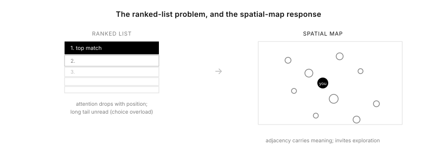
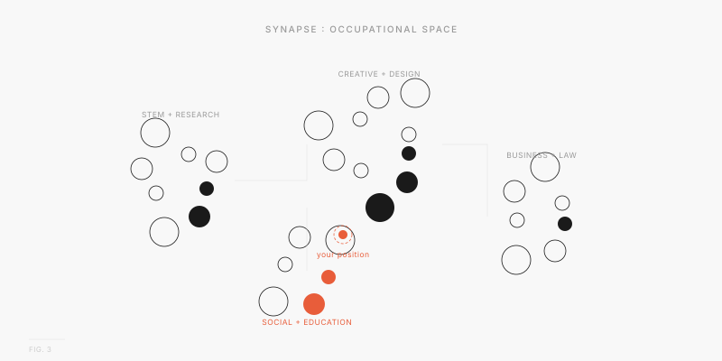
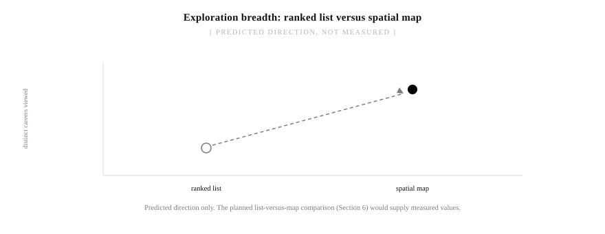

1. Introduction
The standard output of a computer-driven career assessment is a ranked list. The student answers questions about interests, values, and aptitudes; the system computes match scores against a set of occupations; the results are presented as an ordered list, top match first. This format is so common that it has become invisible. It also fails, for structural reasons.

The ranked-list output imports two well-studied interface pathologies into the career-assessment context. The first is position bias: in any ranked presentation, users disproportionately attend to the top results regardless of their actual relevance, and the click-through rate drops sharply with position (Joachims, Granka, Pan, Hembrooke, & Gay, 2005; Pan, Hembrooke, Joachims, Lorigo, Gay, & Granka, 2007). When the user is searching for a known answer (a phone number, a flight, a product), this is functional: the search engine’s job is to put the right answer near the top. When the user is exploring a space they do not yet understand, it is corrosive: it teaches them that the top entries are the answer and the rest is noise. The second pathology is choice overload: when option sets become too large, users defer or abandon decision-making altogether, and the effect is amplified by preference uncertainty, task difficulty, and the goal of exploration rather than confirmation (Iyengar & Lepper, 2000; Chernev, Böckenholt, & Goodman, 2015). Four hundred and sixty occupations sit well past any choice-set size that the Iyengar/Chernev literatures treat as routinely unproblematic for exploratory tasks.
The two pathologies compound. A student who is told “your top match is school counselor” and presented with 459 other options sorted below it has been given simultaneously too few options (the top entry exerts authority) and too many (the long tail is unreadable). The result is a kind of guided foreclosure: the student leaves with an answer they did not earn and an unexplored field they did not see.
This paper describes Synapse, a working career-exploration prototype that responds to this design problem by replacing the ranked-list output with a spatial map. The 460 occupations are arranged in a two-dimensional layout where semantically similar careers sit in spatial proximity. The student answers thirteen forced-choice questions and receives, instead of a list, a position within a continuous occupational landscape. Adjacency carries information; rank does not exist.
The argument I develop is methodological as much as empirical. Synapse is presented as a design-based research artifact (Brown, 1992; Design-Based Research Collective, 2003): the prototype is the contribution, and the theoretical claim is that the design move is responsive to specific failure modes identified in the literature on choice, attention, and visualization. I do not claim that Synapse produces better career outcomes than ranked-list tools; I claim that the design move it makes is theoretically motivated, that it reframes rather than mitigates the two pathologies named above (by removing the ordinal presentation that produces them), and that it opens a research agenda that the ranked-list paradigm forecloses.
The paper proceeds as follows. Section 2 develops the theoretical background across four literatures: vocational psychology and the assessment tradition, choice overload, position bias, and spatial information visualization. Section 3 describes the design-based research methodology that frames the work. Section 4 describes the Synapse prototype in detail. Section 5 discusses what the design move implies, what it does not, and what empirical work remains, and Section 5.4 situates Synapse within the broader research program at Lo/Be Lab, of which it is one prototype. Section 6 concludes.
This paper makes three contributions. First, it names and analyzes the ranked-list problem: the claim that the ranked output format of conventional career assessment imposes specific cognitive costs, position bias and choice overload, that work against the exploratory goal the assessment is meant to serve. Second, it offers a design rationale for a spatial-map alternative, grounding each design choice in the decision-making, information-visualization, and vocational-psychology literatures. Third, it specifies a falsifiable empirical agenda, stating the controlled comparison that would confirm or disconfirm the design hypothesis. I report no effectiveness data, and Section 5 states what therefore remains untested.
2. Theoretical Background
2.1 Vocational Psychology and the Ranked-List Inheritance
Modern computer-driven career assessment inherits its output format from a particular intellectual lineage. John Holland’s RIASEC framework (Holland, 1959, 1997) organizes vocational interests around six personality types (Realistic, Investigative, Artistic, Social, Enterprising, Conventional) and posits that occupational fit follows from the congruence between an individual’s profile and an occupation’s profile across these dimensions. The framework was operationalized in instruments like the Self-Directed Search and, eventually, in the U.S. Department of Labor’s O*NET Interest Profiler, which now anchors much of the career-assessment infrastructure used in counselor-education programs and public career services.
Holland’s framework lends itself naturally to ranked output. Once interests are reduced to a vector across six dimensions, and occupations are similarly profiled, the obvious move is to compute distance metrics and order the results. The ranked list is less a design choice than the implicit data structure of the model. Generations of career-assessment software have inherited it without remark.
This inheritance has been challenged from within vocational psychology itself. Mark Savickas’s career construction theory (Savickas, 2002, 2013) reframes career not as a slot to be filled by a well-matched candidate but as a narrative the individual constructs and revises over time. From this perspective, the output of an assessment is material the individual reworks into a story about who they are and what they want. Lent, Brown, and Hackett’s social cognitive career theory (Lent, Brown, & Hackett, 1994) makes a related move from a different direction: interests emerge from self-efficacy beliefs, outcome expectations, and contextual supports. In neither framework does the ranked match function as the primary output; in both, the output is more properly understood as scaffolding for ongoing developmental work.
Baxter Magolda’s self-authorship framework (Baxter Magolda, 2001, 2008) provides a developmental rationale for why the scaffolding matters. The developmental target of higher education, in Baxter Magolda’s account, is the transition from accepting external authority to authoring one’s own internal commitments. A ranked-list output, presented to a student as the right answer, works against that transition: it offers external authority precisely where the developmental work requires the student to build their own internal voice. Burnett and Evans (2016) translate a similar commitment into a practitioner-facing language: career construction is a design process, with the implication that the artifacts an assessment produces should be drafts to iterate on, not conclusions to accept.
The picture that emerges from a substantial branch of contemporary vocational psychology is a conceptual mismatch between the dominant output format (ranked match) and the constructivist account of vocational identity. Planned happenstance learning theory (Mitchell, Levin, & Krumboltz, 1999) pushes the critique further. In Krumboltz’s account the matching paradigm misframes career choice by assuming that preferences are fixed and outcomes predictable, and the counselor’s task becomes helping clients notice and use chance events. For an exploration-oriented tool like Synapse, this is the more direct theoretical antecedent. The ranked list is a vestige of an earlier psychometric epistemology that the field has largely moved past. Yet the field’s most widely used tools continue to operationalize that older epistemology because the data structures and interface conventions have not been redesigned to follow the theory. McAdams (1993) provides a useful framing: identity work is the construction and continuous editing of a personal story. A list of matches is a poor input to that work; a landscape one can return to and revise is a better one.
2.2 Choice Overload in Decision Interfaces
The empirical literature on choice overload begins, in its modern form, with Iyengar and Lepper’s (2000) jam study, in which a tasting display of 24 flavors of jam attracted more browsers but produced markedly fewer purchases than a display of six. The effect replicated reliably within the original paper and has been extensively studied since. Schwartz (2004) popularized the broader thesis in The Paradox of Choice and brought wide attention to the maximizer/satisficer distinction, which builds on Simon’s concept of satisficing.
Field validation of the choice-overload effect arrived through Sethi-Iyengar, Huberman, and Jiang (2004), who analyzed 401(k) participation across roughly 800,000 employees and found that participation rates fell as the number of available investment funds increased. Each additional fund offered reduced participation by a small but measurable amount. This is the most rigorous non-laboratory evidence that the effect operates outside contrived experimental settings, and it operates in a domain (retirement planning) where the stakes are high and the options are heterogeneous, both characteristics shared by career choice.
A meta-analysis by Chernev, Böckenholt, and Goodman (2015) synthesized 99 observations across more than 7,000 participants and produced a nuanced picture. The bare effect of option-set size on decision difficulty was small and inconsistent across studies. But four moderators reliably amplified the effect: (a) higher choice-set complexity (more dimensions of difference between options), (b) higher decision-task difficulty (less time, more accountability), (c) higher preference uncertainty (the chooser does not yet know what they want), and (d) decision goals oriented toward exploration rather than confirmation.
Career exploration sits at the maximum of all four moderators. The choice set (the U.S. labor market) is high-dimensional; the decision is non-trivial in time and consequence; the chooser is by definition uncertain about preferences (else they would not be using a career-exploration tool); and the goal is exploratory rather than confirmatory. The Chernev et al. framework would predict that an unmediated presentation of 460 occupations to a student is positioned to elicit substantial choice overload, although the framework was not developed on career-assessment populations and the prediction should be treated as theoretically motivated rather than empirically established for this context.
2.3 Position Bias in Ranked Outputs
If choice overload is the pathology of having too many options, position bias is the pathology of how users cope with that excess: by attending only to the first few. Joachims, Granka, Pan, Hembrooke, and Gay (2005) demonstrated through eye-tracking and click analysis that the rate at which users click on search results drops sharply with rank, and that this drop is not explained by relevance alone. When the experimenters randomized the order of search results, holding query and result set constant, the click-through pattern continued to favor the top positions. Rank itself, independent of content, drives attention.
Pan, Hembrooke, Joachims, Lorigo, Gay, and Granka (2007) extended this finding under the suggestive title In Google We Trust. When users were presented with deliberately-degraded ranked results, they continued to trust the order: clicks tracked rank rather than abstract relevance. The ranked list is read as a claim about authority, even when the user knows the ranking algorithm is unreliable.
Applied to career assessment, this finding is uncomfortable. A ranked list of 460 occupations, with “school counselor” at the top, is read by the student as the assessment’s answer, even when the score difference between “school counselor” and the seventh-ranked option is statistically negligible. The format itself teaches false certainty. Students who explicitly know that the algorithm is imperfect will, on the Pan et al. evidence, still defer to the order.
The interaction of choice overload and position bias produces the worst combination for an exploratory tool. Choice overload makes the long tail invisible; position bias makes the head authoritative. Together they collapse the 460-occupation space into a brittle pseudo-decision.
2.4 Spatial Encoding as an Alternative
The information-visualization literature provides an alternative output paradigm. Tversky (1993) distinguished cognitive maps from cognitive collages and spatial mental models, arguing that spatial layouts work as cognitive tools: distance and proximity in a layout carry semantic information that the mind processes automatically and that lists cannot encode. When two careers sit near each other on a layout, the user reads them as similar without instruction; the perceptual system does the inference. A list, by contrast, encodes only ordinal position; the relations between any two non-adjacent items are not visible.
The early canonical text on the field, Card, Mackinlay, and Shneiderman’s (1999) Readings in Information Visualization, frames the central premise as “using vision to think.” On this view, visualization amplifies cognition by offloading inference to the perceptual system. Shneiderman’s (1996) “eyes have it” mantra (“overview first, zoom and filter, then details on demand”) provides the interaction model: a successful information-seeking interface starts with an overview, lets the user filter and zoom into regions of interest, and presents details only on demand. This is the structural opposite of the ranked-list interaction model, which begins with details (the top match) and requires the user to do the overview themselves.
Yi, Kang, Stasko, and Jacko (2007) extended Shneiderman’s task-based taxonomy with a more nuanced interaction typology: select, explore, reconfigure, encode, abstract/elaborate, filter, and connect. The list of seven is useful diagnostically: it makes visible which interactions an interface supports and which it forecloses. A ranked list supports primarily select (pick the top match) and weakly filter (sort by another criterion). A spatial map supports explore (wander through the layout), connect (see relations among multiple items at once), abstract/elaborate (zoom out to see structure, zoom in to see detail), and reconfigure (change the layout’s projection). These are the interactions a career-exploration task requires.
The deeper case for spatial layouts in the career-exploration context rests on what Donald Schön (1983) named reflection-in-action: the practitioner adjusts their understanding of a situation as they engage with it, in response to what the situation reveals back. A spatial layout supports this mode. The user reads adjacency, hypothesizes a relation, moves their attention to test it, and adjusts the reading. The layout becomes the surface on which reflection-in-action operates. A ranked list, by contrast, presents the answer as already resolved, leaving no surface for adjustment. The choice between the two output formats is therefore also a choice about which kind of cognition the tool invites. Synapse’s design commitment is that career exploration requires the reflective mode, and the spatial layout is the format that affords it.
The literature does not claim that spatial layouts are always superior to lists. For tasks where the right answer is known and the user wants to find it efficiently, ranked lists win. The claim is narrower: when the task is exploration of a high-dimensional space with no pre-formed correct answer, spatial layouts support the actual work; ranked outputs interfere with it.
3. Method: Design-Based Research as Inquiry Mode
This paper is positioned within the design-based research tradition (Brown, 1992; Design-Based Research Collective, 2003; Anderson & Shattuck, 2012). Design-based research, in Brown’s founding formulation, treats the design of an intervention not as a delivery of theory into practice but as a mode of inquiry in its own right. The artifact embodies theoretical commitments; revising the artifact revises the theory; the cycle iterates over time and across contexts. The Design-Based Research Collective (2003) identifies five characteristics of the paradigm: dual goals of designing useful artifacts and developing theory; continuous iteration; collaborative work between researchers and practitioners; theory that is humble in scope but rich in application; and methods that document the design rationale alongside the artifact.
The methodology is appropriate to Synapse for two reasons. First, the contribution is dual: the prototype is intended to be useful to students who encounter it, and the theoretical claim is that the ranked-list-to-spatial-map move is responsive to identified failures in the existing literature. Second, the development of the prototype has followed an iterative cycle. Earlier versions of the instrument used different numbers of questions, different scoring procedures, and different output formats; each revision responded to a design question the author noted while building and using the tool. These were design judgments, not studied systematically. Anderson and Shattuck (2012), in their decadal review of the methodology, note that this iterative grounding is what distinguishes design-based research from the design of educational software that is then evaluated against established methods. The artifact and the theory co-develop.
This paper is not a randomized controlled trial, a quasi-experimental comparison of Synapse against an existing career-assessment instrument, or a longitudinal study of outcome differences across cohorts. The current paper develops the design rationale and describes the artifact in sufficient detail that the rationale can be challenged on theoretical grounds. The empirical follow-on work, described in Section 5, will require partnership with counselor-education programs equipped to run the relevant studies; I discuss what those studies would test and what they would not.
4. The Synapse Prototype


4.1 System Overview
Synapse is a single-file web application that runs entirely in the browser (Figures 2 and 3). There is no backend, no user account system, and no server-side state. Student responses are stored in browser localStorage; nothing is transmitted off the device. The tool is freely accessible at sethlooper.com/synapse. This architectural choice is deliberate: it allows the tool to be adopted by individual students, by counselors as a session-time activity, or by schools as a class-time tool, without requiring any institutional infrastructure. It also means that the student owns the artifact, in the literal sense that no one else can access their data.
The user experience consists of three phases: a thirteen-question instrument, a brief processing sequence, and a spatial-map result presentation. A complete session runs in approximately five to eight minutes.
4.2 The Thirteen-Question Instrument
The instrument presents thirteen forced-choice (binary or short multi-select) questions. Each question contributes signal to a profile across the six RIASEC dimensions (Holland, 1959, 1997) augmented with additional dimensions for mood, energy direction, and impact orientation. The mood and values prompts (e.g., “what energizes you,” “money or meaning”) are not part of canonical RIASEC; they reflect the constructionist commitment that career-relevant identity is built from affective and values material that purely interest-based assessments under-represent (Savickas, 2002, 2013).
The forced-choice format is a deliberate design move with both theoretical and practical justifications. Theoretically, forced choice reduces the social-desirability and middle-anchoring biases that plague Likert-scale self-report instruments. Practically, it allows the instrument to fit in a five-minute session, lowering the activation energy for use. The format does sacrifice nuance: a student who is ambivalent between two options must still pick one. This is treated as a feature: the discomfort of forced choice is part of the developmental work the instrument is designed to support.
4.3 The 460-Occupation Corpus
The career corpus is drawn from the U.S. Bureau of Labor Statistics’ Standard Occupational Classification (SOC) system, augmented with the O*NET 26.0 occupation database. The corpus is a curated set of 460 occupations drawn from O*NET and BLS data. The occupation descriptions and wage figures are federal data, but the choice of which occupations to include was the author’s. For a tool that aims to support adoption in school counseling contexts, the inclusion criteria would need to be documented before any adoption review.
Each occupation carries a tag vector derived from O*NET’s interest profile (RIASEC weights), task statements, work activities, and work context. The tag vector is the basis for both the student-occupation matching and the occupation-occupation similarity used to position careers on the map.
4.4 From Scoring to Spatial Layout
The system computes a tag-overlap score between the student’s profile vector (derived from the thirteen-question instrument) and each occupation’s tag vector. The score itself is a standard cosine similarity over the tag space. What changes between Synapse and a conventional assessment is what happens after the score is computed.
A conventional assessment sorts occupations by score and presents the top n as a ranked list. Synapse computes occupation-occupation similarities across the corpus and uses them to lay out the 460 careers in a two-dimensional projection in which spatially adjacent careers are semantically similar. The student’s own profile is then projected onto the same layout, producing a personal “neighborhood” of nearby careers. The student does not receive a ranked list; the student receives a position within a continuous landscape they can navigate.
The choice of projection method is itself a research question. Early iterations of Synapse used a force-directed layout in which careers repelled each other except where tag similarity attracted them. Later iterations have explored UMAP and t-SNE projections of the tag space. The trade-offs among methods are not the subject of this paper, but they matter: different projections preserve different topological properties, and the user reads adjacency literally, so the projection’s distortion budget is part of the design decision (Tversky, 1993).
4.5 Deliberate Diversity Rules
A naive tag-overlap recommender will produce clusters: the top n occupations for a given profile tend to share most of their tags with each other. A student whose profile aligns with the Social dimension will receive a top-twelve cluster of school counselor, social worker, therapist, teacher, nurse, child care worker, and so on, with very little internal differentiation. The recommender is technically working as designed, and the result reproduces in miniature the choice-overload pathology Synapse is meant to dissolve.
Synapse therefore applies deliberate diversity rules during the recommendation step. The first match is the highest-scoring occupation. Each subsequent slot is filled by the highest-scoring occupation that is not within a similarity threshold of any already-selected slot. The result is a recommendation set that spans the user’s interest space rather than collapsing it. This is a design move with a specific theoretical justification: it operationalizes the Chernev et al. (2015) finding that set complexity moderates choice overload, by intentionally reducing within-set similarity rather than increasing absolute set size.
The diversity rules also interact with the spatial layout. Because the layout encodes semantic similarity as distance, a diversified recommendation set will be visibly spread across the landscape rather than clumped in one region. The student sees, in the same view, the recommendations and the implicit logic by which they were chosen: similar to your profile, but distinct from each other.
- The design predicts broader exploration with the spatial map than with the ranked list: participants should inspect more distinct occupations per session. How to measure: log each occupation a participant opens or inspects; compare the count of distinct occupations per session across the two interface conditions.
- Intake is the predicted drop-off point: completion is expected to fall across the thirteen forced-choice questions, and identifying where the largest fall-off occurs is the design question. How to measure: instrument the questionnaire as a funnel; record completion and abandonment per question.
- A minority of users are expected to still prefer a ranked answer after using the map; the design question is how large that minority is. How to measure: a one-item post-task survey: would you have preferred a ranked list?
5. Discussion
Positionality. I designed and built Synapse and am its only developer, so the reflections in this section are mine rather than the result of independent evaluation. I know the design decisions closely, and I have a stake in the instrument’s success. The design rationale is meant to be disconfirmable, and the comparison study in Section 5.3 is specified so an independent party could run it. No IRB-reviewed protocol was in place; observations are the author’s own program notes, not research data.

5.1 What the Design Move Implies
The shift from ranked list to spatial map is not without prior art. Career visualization has been explored in tools including O*NET’s My Next Move adjacency views, LinkedIn’s career-graph experiments, and several research prototypes in HCI venues over the past two decades. Synapse’s contribution within this lineage is not the spatial-map move itself but three specific operationalizations of it: a deployable single-file artifact requiring no institutional infrastructure, explicit framing within the design-based research tradition rather than as a feature in a commercial product, and the diversity-rule design move described in §4.5 as an operationalization of Chernev et al.’s set-complexity moderator.
The shift from ranked list to spatial map also does specific theoretical work that mitigation strategies for the same pathologies do not. Mitigations for position bias (randomizing order, marking the score difference, presenting confidence intervals) leave the ranked-list format intact; they ask the user to discount the cue the format provides while continuing to provide it. Mitigations for choice overload (filtering, faceting, progressive disclosure) reduce the option set but do not change its presentation as a list. The spatial-map move is structurally different: it removes the ordinal frame at the level of presentation. There is no explicit “top match” because there is no explicit rank. There is no “long tail” because there is no list to have a tail. (A spatial layout reintroduces an implicit ordering via proximity to the student’s profile, which I treat in the next paragraph.)
This is not a free move. The spatial layout cannot be wrong about position (there is no position to be wrong about), but it can be wrong about layout. If the projection method introduces distortion such that semantically distant careers end up spatially adjacent, the user reads a false similarity into the data. The Tversky (1993) literature is clear that this misreading is automatic; the perceptual system does not check the projection’s distortion budget. The design responsibility shifts from “what goes on top” to “what does adjacency in the layout actually claim.”
A related implication: spatial layouts make different demands on the user. A ranked list demands almost nothing; the answer is at the top. A spatial map demands navigation, comparison, and reading proximity for meaning. This is more work, and for users whose goal is a quick verdict, the additional work will feel like a usability failure rather than a feature. Synapse’s design bet is that the additional work is the work the user came for, even when the user would have preferred the verdict.
5.2 Limitations of the Current Implementation
Several limitations would need to be addressed in follow-on work. The thirteen-question instrument has not undergone factor analysis to confirm that the items map to the RIASEC dimensions they were intended to map to; convergent validity against the O*NET Interest Profiler has not been established. The 460-occupation corpus, while federally sourced, inevitably under-represents occupations not well-described by BLS SOC categories (emergent roles, hybrid roles, niche specializations). The tag vectors derived from O*NET data carry the demographic and contextual blind spots of the source: under-represented occupations in the BLS sample are under-represented in the resulting layout. The tool has not been evaluated in a controlled comparison against an existing career assessment.
The single-file architecture, which is a strength for adoption, is a limitation for cohort research. Without server-side state, comparing student trajectories across a class is not possible without out-of-band data collection. A class of students each using their own browser instance produces no shared dataset, so the longitudinal work that an institutional career-services context would care about requires architectural extension that the current implementation does not support.
5.3 Open Research Lines
The design move opens an empirical agenda that the ranked-list paradigm did not. Seven lines of inquiry are currently open at Lo/Be Lab.
Construct validity. Exploratory factor analysis on student responses to confirm that the thirteen prompts map to the dimensions they were designed to. This would require approximately 200 responses and convergent validity comparison against the O*NET Interest Profiler. The work requires partnership with a counselor-education program with IRB infrastructure and a student population large enough to support the analysis.
Social cognitive career theory integration. The Lent, Brown, and Hackett (1994) framework predicts that interest formation is shaped by self-efficacy beliefs, outcome expectations, and contextual supports, not merely by trait expression. The current Synapse instrument does not measure these variables. A revised instrument would add three prompts to elicit self-efficacy, perceived barriers, and outcome expectations, and would reweight scoring to honor SCCT’s predictive structure. The expected effect is that students who report high self-efficacy in a given dimension but low contextual support would receive different recommendations than students with the inverse profile, even with identical interest vectors.
Workforce demographic annotation. The BLS Current Population Survey (Table 11) reports workforce composition by SOC code along dimensions of sex, race, and age. Each career card in Synapse could carry a workforce-composition field, surfacing demographic realities that the current interest-and-tags representation does not show. The annotation work is mechanical (a database join) but the design question is interface-level: how is demographic composition surfaced in a way that informs without prescribing?
AI exposure validation. Several published frameworks now estimate occupational exposure to AI automation (Frey & Osborne, 2017; Eloundou, Manning, Mishkin, & Rock, 2024; the McKinsey Global Institute’s various reports; Brookings analyses). Synapse currently does not surface AI-exposure information per occupation; doing so would require a per-career citation pass mapping each occupation to a specific source’s exposure score and methodology. This is the most ambitious of the lines because it implicates the broader question of how a career-exploration tool should represent the future of the occupations it presents.
Metro salary adjustment. The current Synapse implementation displays national salary ranges drawn from BLS data. The Bureau of Economic Analysis’s Regional Price Parities provide a basis for metro-level cost-of-living adjustment, which would make the salary displays meaningful for non-coastal and international students. The implementation is small; the design question is whether the adjusted display competes with or complements the national figures.
Odyssey Plans as default output. Burnett and Evans (2016) recommend that career deliberation produce three plausible plans, not one, and that the comparison among them is the developmental work. The current Synapse output presents a single recommendation set. A revised output would present three Odyssey Plan candidates, allowing the student to see the same underlying profile rendered as three different careers. This addresses an under-claimed feature of the spatial-map output: that the user is now positioned to see multiple plausible neighborhoods, not just one.
ASCA and NACE standards coverage. The American School Counselor Association’s Mindsets and Behaviors framework and the National Association of Colleges and Employers’ Career Readiness Competencies provide explicit standards against which a counselor-deployed tool would be evaluated. Synapse’s counselor-facing PDF export could carry a per-standard coverage report indicating which standards a completed session evidences. Students would not see this report, but school adoption is likely to turn on it.
Two further lines (longitudinal reliability via versioned localStorage snapshots; backfill of prestige-disadvantaged careers underrepresented in the current narrative depth) are in scope but lower priority for the present cycle.
5.4 Position Within the Broader Research Program
Synapse is one prototype within an ongoing research program at Lo/Be Lab on environments that support reflective work during life transitions. The framework paper (Looper, 2026f, The Architecture of Becoming) sets out the lab’s five research questions in full; Synapse bears on one of them.
Synapse most directly addresses RQ2. The replacement of ranked-list output with spatial map is a design-principle claim that this paper develops theoretically and that future empirical work will test. Other working reports in the series describe the prototypes that address the remaining questions. See also the author’s field note Maps over lists, which traces the spatial-map pattern across several prototypes.
6. Conclusion
This paper has argued that the dominant output format of computer-driven career assessment, the ranked list, imports two structural pathologies, choice overload and position bias, into a context where they actively work against the assessment’s developmental purpose. I described Synapse, a working prototype that responds to this design problem by replacing ranked-list output with a spatial map of 460 occupations. The controlled evaluation the design move calls for is the research agenda set out in Section 5.3.
The broader claim is that interface form is part of the cognitive task. A ranked list asks the user to pick from it; a spatial map asks the user to move through it, which is closer to what career exploration involves.
I welcome collaboration on the open research lines in Section 5.3, especially from counselor-education programs equipped to run the construct-validity and SCCT-integration studies. Contact: seth@lo-be-lab.org.